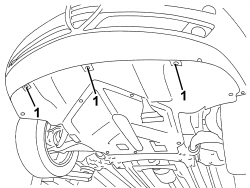
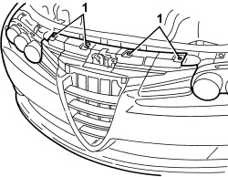
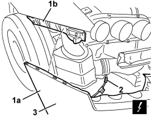

7210E10 R.R. FRONT BUMPER
- Path
- Procedures > 72 PANELS AND FRAMES > 7210 REMOVING-REFITTING > 7210E EXTERNAL PARTS > 7210E10 R.R. FRONT BUMPER
- Kind
- repair procedure (removal / refitting; the operation number is the code)
- Applies to
- all engines; all production periods
- Interactive page
- https://sloeber94.github.io/elrnDB-aBrrSpdr/en/#/946002733
Applies to: all engines; all production periods
 Removing
Removing
 Refitting
Refitting- Position the vehicle on a lift.
- Raise the vehicle.
1. Working on both sides of the vehicle, undo the bolts fixed to the wheel arches (1a) and the nuts fixed to the bodyshell (1b).

Applies to: all engines; all production periods
Op. 7055B54 UNDER ENGINE PROTECTION/GUARD - R.R.
1. Undo the lower bolts fixing the bumper.

Applies to: all engines; all production periods
- Lower the vehicle.
1. Undo the upper bolts fixing the bumper.

Applies to: all engines; all production periods
1. Move bumper (1a) slightly to one side by releasing from side retainers (1b).
2. Disconnect the electrical connections.
Description | Component |
|---|---|
FRONT/BUMPER COUPLING |
3. Recover the front bumper.

Applies to: all engines; all production periods
Refitting
Removing- Check that the bumper is not damaged.
- Connect the electrical connections.
- Position the bumper and fit in its seat, doing up the side retainers.
- Tighten the upper bolts fixing the bumper.
Component | Fastening | dia | Value (daNm) | Validity |
|---|---|---|---|---|
FRONT BUMPER | Bolt | M6x22 | 0.7 ÷ 1.1 |
- Raise the vehicle.
- Tighten the lower bolts fixing the bumper.
Component | Fastening | dia | Value (daNm) | Validity |
|---|---|---|---|---|
FRONT BUMPER | Bolt | M6x22 | 0.7 ÷ 1.1 |
Op. 7055B54 UNDER ENGINE PROTECTION/GUARD - R.R.
- Working on both sides of the vehicle, tighten the bolts fixed to the wheel arches and the nuts fixed to the bodyshell.
- Remove the vehicle from the lift.
Topics linked from this page (2)
Topics that link to this page (48)
- 1004B10 POWER UNIT WITH MANUAL GEARBOX - R.R
- 1004B14 POWER UNIT WITH AUTOMATIC TRANSMISSION R + R
- 1004B24 POWER UNIT WITH MANUAL GEARBOX WITH HYDRAULIC SELECTION - R.R.
- 1048B50 INTERCOOLER - R + R
- 1064A22 VARIABLE GEOMETRY TURBOCHARGER R R
- 1084C29 FRONT ENGINE OIL DELIVERY PIPE TO COOLING RADIATOR - R. R.
- 1084C31 FRONT ENGINE OIL RETURN PIPE FROM COOLING RADIATOR - R. R.
- 1084C34 ENGINE OIL COOLING RADIATOR - R + R
- 1088B20 ENGINE COOLING RADIATOR - R + R
- 1088D06 THREE-WAY CONNECTOR BETWEEN RADIATOR AND THERMOSTAT
- 2130A40 COOLANT SUPPLY PIPE TO AUTOMATIC TRANSMISSION FLUID HEAT EXCHANGER - R.R.
- 2130A42 WATER SUPPLY/RETURN PIPES TO HEAT EXCHANGER - R.R.
- 2130A44 AUTOMATIC TRANSMISSION FLUID HEAT EXCHANGER COOLANT RETURN PIPE - R.R.
- 2130A45 RIGID PIPE FROM THERMOSTAT TO HEAT EXCHANGER - R.R.
- 2130A61 AIR DUCT ON AUTOMATIC TRANSMISSION - R.R.
- 2130B36 AUTOMATIC TRANMISSION VALVE COVER R R
- 2130B37 OIL INLET COVER ON AUTOMATIC TRANSMISSION VALVE ASSEMBLY
- 2130B40 GEAR SELECTION SOLENOID UNIT - R R
- 2130B69 AUTOMATIC TRANSMISSION ENGINE BRAKE ON/OFF SOLENOID VALVES - R.R.
- 2135B58 ELECTRONIC AUTOMATIC TRANSMISSION SYSTEM WIRING - R.R.
- 4130B43 RETURN PIPE FROM POWER ASSISTED STEERING BOX TO HEAT EXCHANGER - R.R.
- 4130B45 RETURN PIPE FROM HEAT EXCHANGER TO POWER ASSISTED STEERING FLUID RESERVOIR - R.R.
- 4130B52 HEAT EXCHANGER PIPE - R+R
- 4130B98 POWER ASSISTED STEERING FLUID COOLING RADIATOR - R.R.
- 5040A20 AIR CONDITIONING COMPRESSOR - R+R - INCLUDES FLUID LEVEL CHECK AND TOP UP IF NECESSARY
- 5040A26 AIR CONDITIONING COMPRESSOR SUPPORT - R.R.
- 5040A40 AIR CONDITIONING CONDENSER - R+R
- 5040A44 AIR CONDITIONING DRIER FILTER/ACCUMULATOR - R+R
- 5040A81 PIPE FROM EXPANSION VALVE TO CONDENSER AND COMPRESSOR FILLING R R
- 5050D08 HEADLAMP WASHER JET/S - R.R.
- 5050D13 HEADLAMP WASHER SYSTEM PIPES AND CONNECTORS - R.R.
- 5505C02 WIRING BUILT INTO FRONT BUMPER - R.R.
- 5530A10 ALTERNATOR - R+R
- 5530A52 ALTERNATOR COOLING FAN - R.R.
- 5530A53 FRONT ALTERNATOR COOLING PIPE - R.R.
- 5540B16 FRONT LIGHT CLUSTER TRIM (ONE), LEFT OR RIGHT - R.R.
- 5540B17 EXTERIOR LIGHT DIMMER HEADLAMP RESISTOR - R+R
- 5540B70 LEFT FRONT LIGHT CLUSTER WITH DIRECTION INDICATOR - R.R.
- 5540B71 RIGHT FRONT LIGHT CLUSTER WITH DIRECTION INDICATOR - R.R.
- 5540B81 LEFT GAS DISCHARGE LIGHT CLUSTER - R.R.
- 5540B82 RIGHT GAS DISCHARGE LIGHT CLUSTER - R.R.
- 7025A28 BONNET LID OPENING CABLE - R R
- 7055A40 RADIATOR BADGE - R.R.
- 7055B08 GRILLE (ONE) ON FRONT BUMPER - R.R
- 7055B74 FRONT BUMPER SIDE MOUNT (ONE) LEFT OR RIGHT R R
- 7210A15 R.R. FRONT WING/HEADLAMP HOUSING CROSSMEMBER
- 7210A18 R.R FRONT CROSSMEMBER
- 7210E18 R.R. FRONT WING